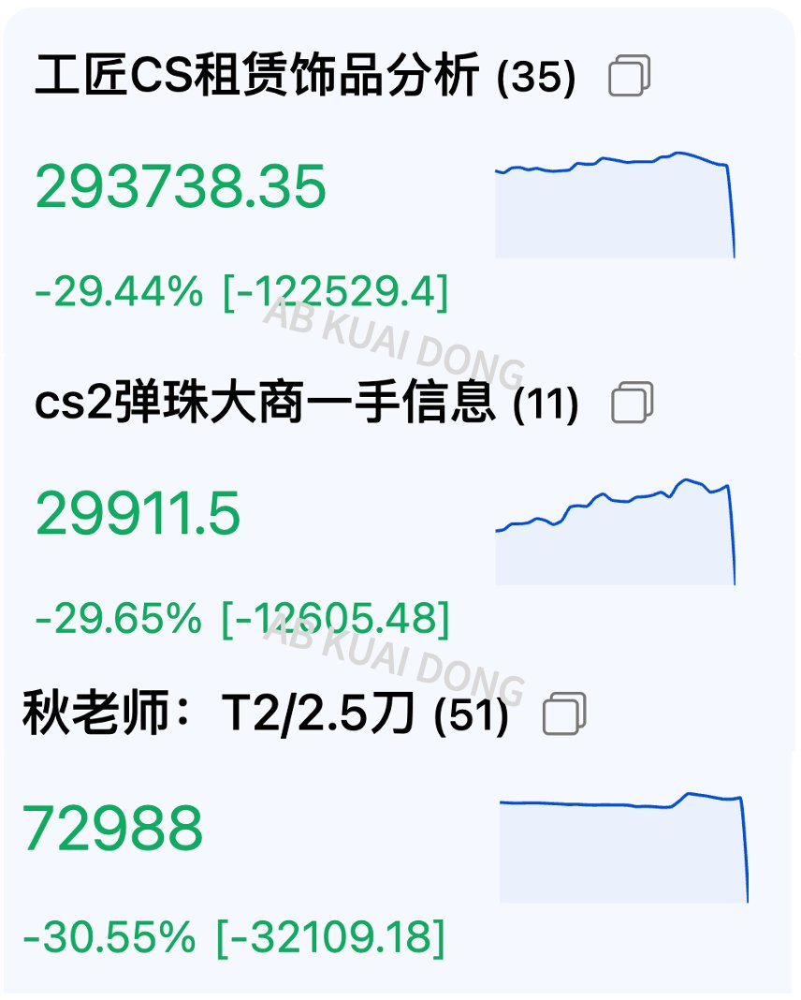
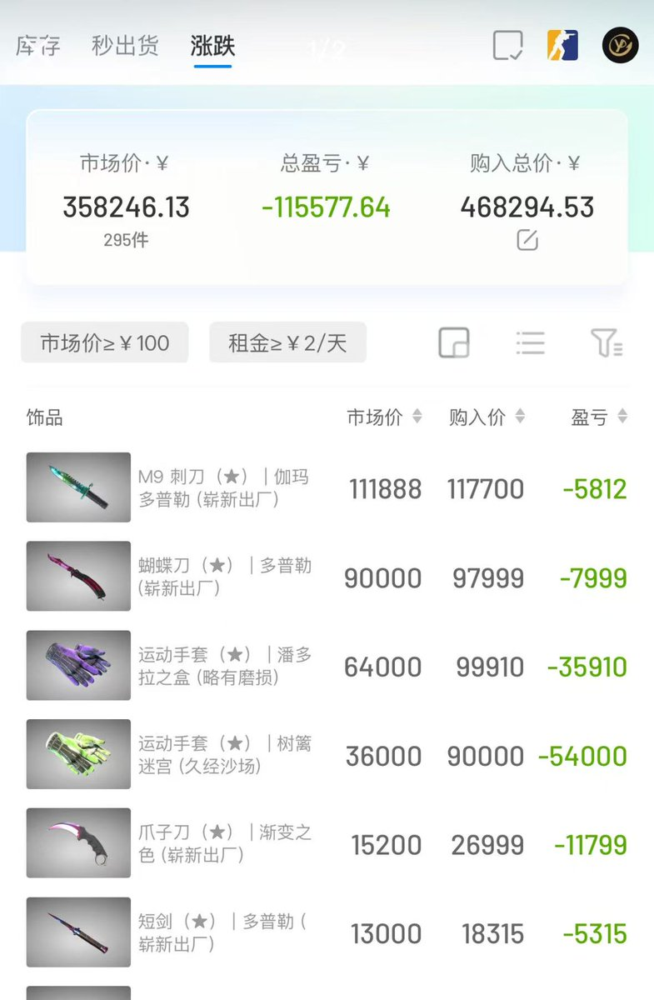

RedFox（2代目）🇲🇴🇭🇰
@FoxRed695449
突然感覺那些基金、結構性投資的風險提示也能用在這裡：
本產品並無抵押品。如發行人無力償债或違約，投資者可能無法收回部份或全部應收款項。本產品的價格可急升急跌，甚至變的毫無價值，投資者可能完全損失其投資。過往表現並不反映將來表現。投資前請參閱作出風險評估及尋求專業意見。


AB Kuai.Dong
@_FORAB
全年一度涨幅超过比特币、标普 500 的 CSGO、CS2 游戏饰品道具，在今天早间全面崩盘。
本该全年录得 76% 的涨幅
今早饰品指数，直接下跌了 36%
社区解释原因是因为近期的版本更新
导致原本需要开箱，获得的刀子、手套类饰品
现在可以直接，用 5 个红色等级饰品合成
被社区解读为资产超发 https://t.co/Q9DucsItyh